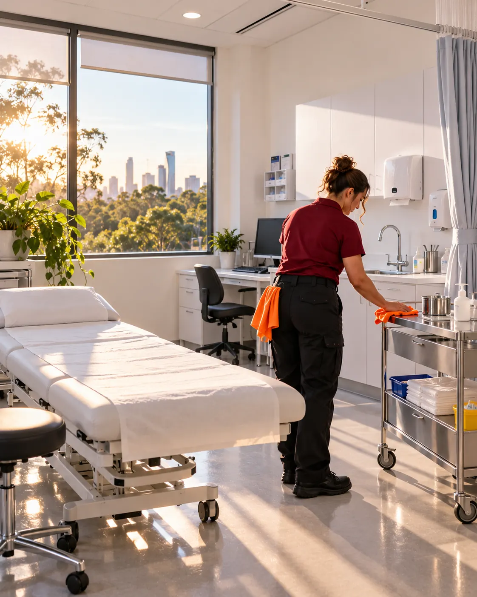
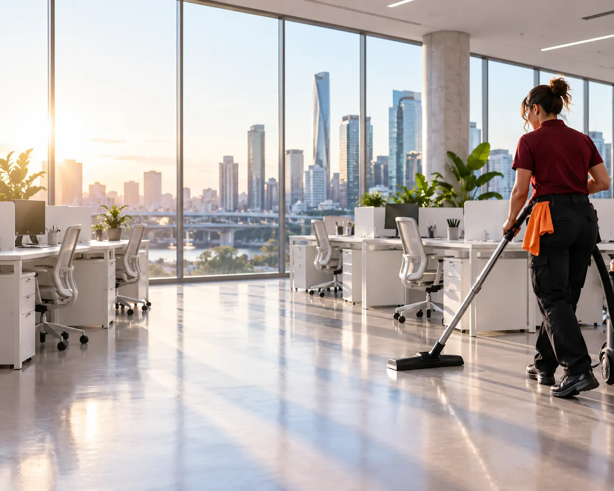
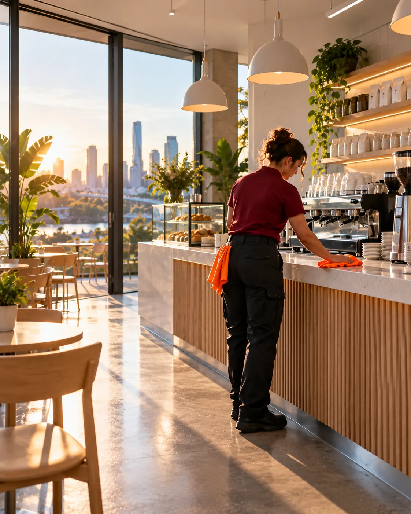
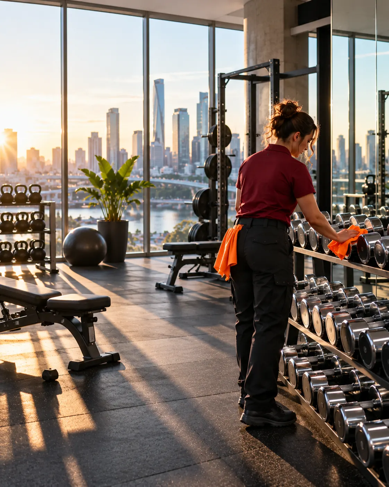

Clinic cleaning that stands up to an audit.
GP practices, dental, physio and allied health. Colour-coded, documented and logged, so you can show exactly what was cleaned and when.

Why it matters
In a clinic, a clean that looks fine is not good enough. It has to be done the right way, every time, and you have to be able to prove it.
Keystone works to a written routine for each room type: consult rooms, treatment rooms, waiting areas, washrooms and staff spaces. Cloths and equipment are colour-coded so nothing from a washroom ever touches a treatment surface, and every visit is logged with a time and a sign-off.
When accreditation comes around, you have a record, not a promise. We work around your session times, before opening or after the last patient leaves.
What's included.
A starting point. Your written scope is built at the walkthrough. Most clinics need a clean every operating day, timed before the first patient or after the last.
Every visit
- Consult + treatment surfaces wiped down
- Treatment beds, trolleys + stools
- Waiting room seating + counters
- Door handles, switches, touch screens
- Washrooms cleaned + restocked
- Hard floors mopped, carpets vacuumed
Weekly
- Skirting, vents + window ledges
- Inside sinks + splashbacks detail
- Staff kitchen appliances
- Glass doors + reception screens
Monthly
- High dusting + light fittings
- Chair upholstery vacuumed
- Deep clean of washrooms
- Routine + log review with practice manager
Good questions.
Do you handle clinical waste or sharps?
No. Clinical waste and sharps stay with your licensed waste contractor. We clean the rooms and surfaces around them.
Can you provide cleaning records for accreditation?
Yes. Every visit is logged with time on site, areas completed and sign-off, and we can share the log on request.
Do you clean dental and physio practices?
Yes. Each practice type gets its own room-by-room routine, agreed at the walkthrough.
Can you work around our session times?
Yes. Cleans are scheduled before opening or after the last patient, so you never see us during clinic hours.
We also clean.

Explore →Offices
Open-plan floors, boardrooms, kitchens and washrooms, cleaned after hours by the same crew every visit and…

Explore →Hospitality
Front of house, back of house, floors and drains. Cleaned overnight so your team opens straight into service,…

Explore →Gyms
Equipment, rubber floors, mirrors, change rooms and showers. The things members notice first, cleaned in the…
clinics, sorted.
Book a free site walkthrough. We look at the space, agree the scope, and send a fixed price.